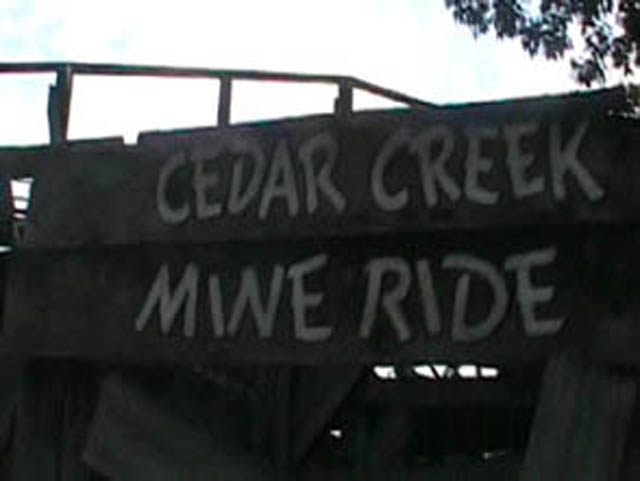

| |
Cedar Creek Mine Ride Review

We're here at Cedar Point. Today's ride we'll be reviewing for you is Cedar Creek Mine Ride. We dip out of the station and turn straight into a tunnel. While it's not a dark tunnel, it's still really fun and adds a little spice to what would otherwise be stupid boring straight track. So good job on the crappy tunnel Cedar Point. After the tunnel, we turn around and head up lift hill #1. Now, on my one and only ride on Cedar Creek Mine Ride, it got stuck in the middle of the first lifthill for about 10-15 minutes. I honestly thought I was going to have to get evacuated and walk down the stairs. But anyways, back to the actual ride. Once you reach the top of the lifthill, we go down the pre drop and head into some straight track. Once the straight track is over, we curve down into the first drop. It's pretty small, but still fun. Then we head into a banked turn only to rise up a little bit. Then we head into a turnaround, only to rise up a little bit into straight track. During this straight track, we hit some trim brakes that take away all our speed. We then head into a curved drop. Then we head straight into some banked straight track. The banking is kind of cool, but it's still just straight track. Still banked, we rise up a little and head into a giant turn in the trees. That's kind of cool. We then head into a brake run before turning into the second lifthill. After the second lifthill, we head into some more straight track. We then turnaround into a little more straight track. We then head into a sort of small curved drop before heading for some more banked straight track. We then curve up into some more straight track. After hitting some stupid trim brakes that take away all our speed, we head for the best part of the ride. The Fake Helix of Death!!! You dive down and start spiraling to the ground. While it's not intense, it is fun and it makes everyone in the train giggle like little school girls. After that madness, you curve up into the brake run. For a mine train, it's a pretty good ride. It's not as good as Both Thunder Mtns. But hey, It is LIGHTYEARS ahead of Trailblazer. However, I would only recommend riding if you're a credit whore, have already been to Cedar Point, are just getting into rollercoasters, are spending multiple days at Cedar Point, or the ride has a walk on wait.
5/10
Location: Cedar Point
Opened: 1969
Built by: Arrow
Last Ridden: June 20, 2021
Cedar Creek Mine Ride Photos
p>



Home
|